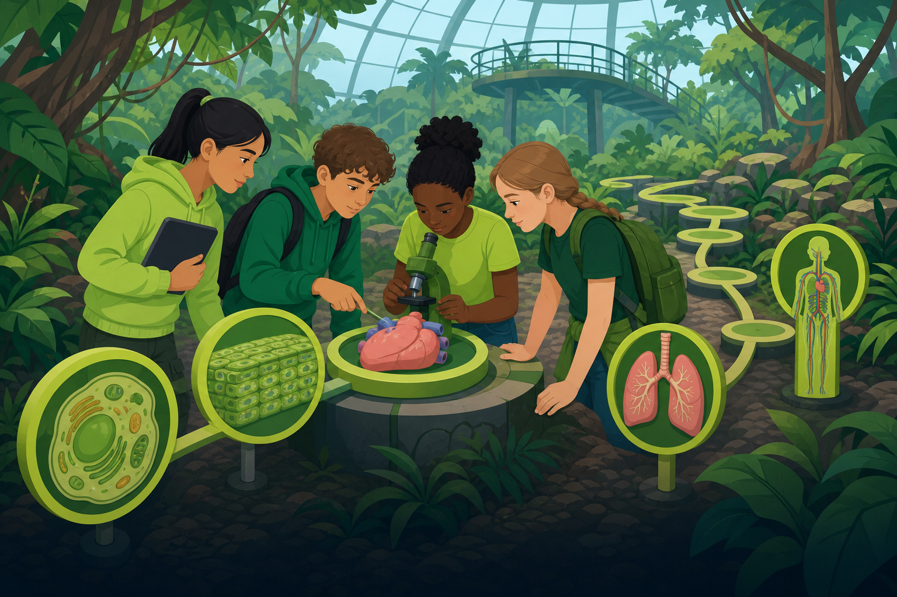

Welcome to the BODY SYSTEMS TRAIL! Deep in the bio-dome, a fallen field station left its organism scans scrambled. Cells, tissues, organs, and organ systems no longer line up on the trail's diagnostic markers, and the expedition team cannot tell how the jungle's animals keep themselves alive. Complete every challenge in this room, then open the unlock page to check your answers.
4 challenges — answer them all, then unlock.